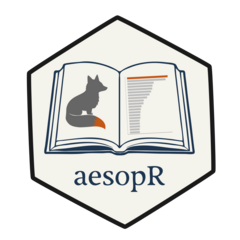

Overview
aesopR provides a tidy text corpus of public-domain Aesop’s Fables sourced from the Library of Congress.
The package includes full narrative texts and word-level representations designed to support:
- Text analysis
- Sentiment analysis
- Linguistic exploration
- Teaching demonstrations
- Reproducible NLP workflows
The data are structured in a tidy format, making them immediately compatible with the tidyverse ecosystem.
Installation
You can install from CRAN:
install.packages("aesopR")Or the development version from Github:
Included Datasets
Pre-Joined Sentiment Datasets
The package also includes sentiment-enriched token datasets using built-in tidytext lexicons: • aesops_afinn • aesops_bing
These datasets allow immediate sentiment exploration without external downloads.
Data Source
Texts were retrieved from:
Library of Congress https://read.gov/aesop/
All texts are believed to be in the public domain.
Why aesopR?
Many NLP examples rely on song lyrics or copyrighted material. aesopR provides a fully public-domain corpus suitable for: • Classroom demonstrations • Methods courses • Sentiment tutorials • Research reproducibility • Package examples
License
MIT © Dave Brocker
Text corpus derived from public-domain sources.